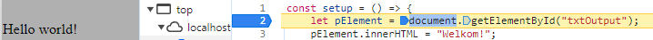

Breakpoint
Zet een breakpoint op de eerste regel van de setup functie en herlaadt de pagina. Vergewis je ervan dat er wel degelijk "Hello world! " op het scherm staat.
Hello world!
Zet een breakpoint op de eerste regel van de setup functie en herlaadt de pagina. Vergewis je ervan dat er wel degelijk "Hello world! " op het scherm staat.